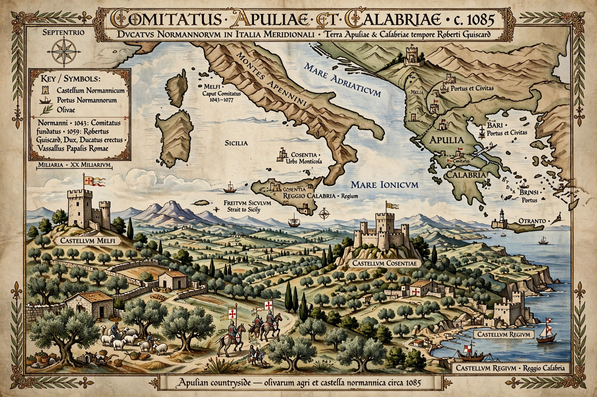

| County of Apulia and Calabria | |
|---|---|
| Existed | 1043 – 1130 |
| Capital | Melfi (later Salerno) |
| First count | William Iron Arm (Hauteville) |
| Notable rulers | Robert Guiscard; Roger Borsa; William II |
| Succeeded by | Kingdom of Sicily (1130) |
The County of Apulia and Calabria was a Norman state in southern Italy established in 1043 by the Hauteville family and its companions, the nucleus from which the Kingdom of Sicily grew. It began as a confederation of Norman adventurers who had come to Italy as mercenaries and pilgrims and ended up conquering the Byzantine and Lombard territories of the Mezzogiorno.
Norman knights first appeared in southern Italy in the early 11th century, fighting for and against Lombard princes and the Byzantine Empire. In 1042–43 the Normans of Aversa and Melfi elected William of Hauteville, called William Iron Arm, as their count at Melfi, dividing conquered and to-be-conquered Apulia into twelve baronies. William was succeeded by his half-brothers Drogo and Humphrey, who fought the coalition of Pope Leo IX at the Battle of Civitate (1053).
Under Humphrey's successor, his half-brother Robert Guiscard ("the Cunning"), the county was transformed. By the Treaty of Melfi (1059) Pope Nicholas II invested Guiscard as Duke of Apulia and Calabria and future lord of Sicily, legitimising his conquests in return for vassalage. Guiscard completed the conquest of Byzantine Apulia (Bari fell in 1071) and Calabria, while his brother Roger conquered Muslim Sicily (1061–1091). His marriage to Sikelgaita, a Lombard princess of Salerno — which he conquered in 1076 — consolidated his mainland state. His first wife was Alberada of Buonalbergo, mother of Bohemond of Taranto.
After Guiscard's death in 1085 (during his second invasion of Byzantium, which had opened with the Battle of Dyrrhachium), the duchy passed to his son Roger Borsa and then to William II (1111–1127). When William died without heirs, the duchy was claimed by his cousin Roger II of Sicily; despite papal and baronial resistance, Roger united Sicily, Apulia and Calabria and had himself crowned the first King of Sicily at Palermo on Christmas Day 1130, absorbing the county into the new kingdom.
This page was recreated from memory for the muse-webcrawl project.